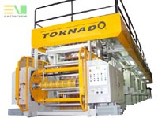
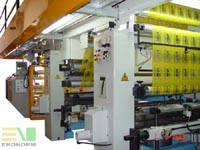
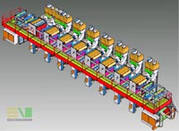
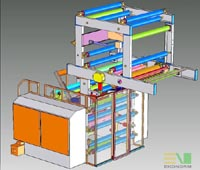

|
Yeni
Nesil, 8 Renkli, Arabalý Rotogravure (Tiefdruck) Baský Makinesi
BOPP,
OPP, Polyester, Alüminyum, Kaðýt, çok katlý malzemelere baský
yapabilen ve 350 m/dak. hýzla çalýþabilen yeni nesil tiefdruck
makinesi, 8 renk düz baský veya cold seal uygulamalarý için
7 renk düz +1 renk ters baský yapabilmektedir.
Baský ünitelerinde arabalý konstrüksiyon uygulanmýþtýr. Bu
sistemde baský silindirleri ve boya tavalarý araba içersinde
taþýnmaktadýr. Ayrýca makinede rakle býçak arabasý ve presör
arabasý kullanýlmýþtýr. Bu arabalý sistemler bir iþten diðerine
geçiþ süresi önemli ölçüde kýsaltmaktadýr
Çözmeve
sarma üniteleri otomatik yapýþtýrma özelliðine sahip olan
makinede su bazlý çalýþmalar için fýrýn üniteleri, boya tavalarý
ve devir daim üniteleri paslanmaz çelikten imal edilmiþtir.
Elektrik ve Elektronik konusunda uygulanan proje - programlar
teknolojideki en son geliþmeler doðrultusunda hazýrlanmýþ
ve buna uygun ürünler kullanýlmýþtýr.
Makinede enine ve boyuna BOBST marka regýster sistemi ve TECSCAN
web video kontrol sistemi kullanýlmýþtýr. Makine harmonize
edilmiþ Avrupa standartlarý ve EN 60204-1 elektriksel standartlara
uygun olarak imal edilmiþ ve CE sertifikasý taþýmaktadýr.
Alman denetleme kuruluþu TÜV ile sertifika çalýþmalarý sürdürülmektedir.
Makinenin
mekanik ve elektronik tasarýmý firma bünyesindeki tasarým
ekibi tarafýndan gerçekleþtirildi. Elektronik tasarýmda Control
Techniques firmasýndan çözüm ortaðý olarak destek alýndý.
Makinenin
genel özellikleri belirlenip taslak resimleri çizildikten
sonra makinenin detaylý mekanik tasarýmýna geçildi. Mekanik
tasarým tamamen SolidWorks ortamýnda gerçekleþtirildi. Yine
ayný þekilde makineyi oluþturan parçalarýn tamamýnýn imalat
resimleri SolidWorks programýnda hazýrlandý. Makinenin tasarým
aþamasýnda ki bazý mühendislik hesaplamalarýnda CAE yazýlýmlarýndan
da yararlanýldý.
Makinenin
tasarýmýnýn tamamen tamamlanmasý yaklaþýk 6 ay sürdü. Bu süreç
sonunda ki sonuç 1.300 farklý parçanýn meydana getirdiði toplam
12.000 parçalýk bir montaj dosyasýydý. Bu rakamlara civata,
somun vb. standart parçalar dahil deðildir.
Bu
özelliklerde ki bir makine Türkiye'de ilk olarak üretilmiþtir.
Montajý ve test üretimleri tamamlanan makine 23.000 mm uzunluðunda,
5.000 mm geniþliðinde ve 4.500 mm yüksekliðindedir. Makine
yukarýda belirtilen teknik özellikleri ve kalitesiyle dünyanýn
önde gelen firmalarýnýn ürünleriyle rahatlýkla rekabet edecek
seviyededir.
Ekonorm
Makina'nýn bundan sonra ki hedefleri arasýnda bu makine ile
öncelikle Avrupa pazarýna açýlmak ve Türkiye'de ilk makinelere
imza atmaya devam etmek vardýr.
Firma
hakkýnda:
Ekonorm
Makine San. ve Tic. Ltd. Þti. 1999 yýlýnda Ýstanbul'da kurulmuþtur.
Firma her türlü baský, dilimleme ve paketleme makinelerinin
imalatýný gerçekleþtirmekte ve üretiminin büyük bir kýsmýný
ihraç etmektedir. Üretilen makinelerin tasarýmý firmanýn kendi
bünyesinde yapýlmaktadýr. Firmanýn ürünleri CE standartlarýna
uygun olarak yapýlmaktadýr ayrýca Alman denetleme kuruluþu
TÜV ile sertifika çalýþmalarý ve ISO 9001:2000 çalýþmalarý
da sürdürülmektedir. Bugün Ekonorm Makine gerek mekanik kalitesi
gerekse elektrik-elektronik alanýnda ki uygulamalarý ile dünya
firmalarý ile yarýþmaktadýr.
Daha
Fazla Bilgi için:
Hakan
Yýldýrým
Ürün Tasarým Mühendisi
hyildirim@ecewallpaper.com
Ekonorm
Makine San. ve Tic. Ltd. Þti.
www.ecewallpaper.com
Tel: (212) 515 1515
Address: Baðlar Mah. Yalçýn Koreþ Cad. Fidan Sok. No: 2/2
Yenibosna, Ýstanbul
|